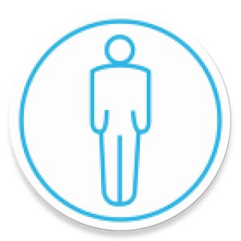

CampusLife
Explore mental-emotional-social context with smartphones

Introduction
Together with Dartmouth University, Carnegie Mellon University and Cornell University, we at Georgia Tech are interested in extending the seminal work of StudentLife, started by Dartmouth’s Andrew Campbell a few years ago. Campbell sought to determine if mental health and academic performance could be correlated, or even predicted, through a student’s digital footprint. The CampusLife project is a logical extension, which aims to collect data from relevant subsets of a campus community through their interactions with mobile and wearable technology, social media and the environment itself.
In the Spring of 2016, the CampusLife team at Georgia Tech had performed a campus wide study similar to that of Dartmouth. The data collected from the study along with follow up studies with participants brought to light many pitfalls of the deployment. Due to which it was necessary to understand why these problems occurred and how can we mitigate for a future deployment in 2017.
My Role
This is a large project involving multiple universities. The team at Georgia Tech consists of 5 PIs and 8 student researchers - each student working under a PI and focussing on a specific area for the project. The areas can be broadly divided into privacy, social, health, informatics and technology. My work was primarily guided by Gregory Abowd and lied mainly in the realm of technology but was influenced by other areas too.

Past Work
Original Dartmouth Study
StudentLife used passive and automatic sensing data from the phones of a class of 48 Dartmouth students over a 10 week term to assess their mental health (e.g., depression, loneliness, stress), academic performance (grades across all their classes, term GPA and cumulative GPA) and behavioral trends (e.g., how stress, sleep, visits to the gym, etc. change in response to college workload -- i.e., assignments, midterms, finals -- as the term progresses).
They use computational methods and machine learning algorithms on the phone to assess sensor data and make higher level inferences (i.e., sleep, sociability, activity, etc.) The StudentLife app that ran on students' phones automatically measured the following human behaviors 24/7 through the user's phones:
Sleep Timings and Duration
Number of Conversations
Physical Activity
Location
Colocated Students
Indoor/Outdoor Mobility
Stress Level
Possitive Affect
Eating Habits
App Usage
Some of the results from the study have been published on their website along with the dataset that they used.


CampusLife Spring 2016
CampusLife is Georgia Tech's effort to emulate and improve upon the work done at Dartmouth, in the context of its own campus. The researchers at GT used 2 different tools in this study for the purpose of data acquisition:

In order to meet the needs of the CampusLife, both these tools were modified accordingly. While AWARE is open-source, researchers from the team were directly involved in making changes to core mechanics. On the other hand since Quedget is a commercial product, any requirements regarding that were outsourced.
Please note, CampusLife collects some information differently (e.g. the self reported information is far more broader) than the StudentLife study, and also some new kind of information (e.g. passive activity recognition, mobile communication etc).
From Arpil 6, 2016 - May 6, 2016
Of the total 63 that were enrolled 12 were removed
The data that was collected from these studies brought forth fresh requirements for the various stakeholders in this project. Why these were necessary and how we addressed these pain points will be discussed in the following sections.
New Requirements
Stakeholders
The major parties relevant to the overall project are:
Passive Data
A huge amount of data that is being collected is from the background, it is almost unnoticeable for the participant. However, this leads to a few different problems. The first being that while the process of data collection is invisible, it might lead to repurcussions, or if I may, side-effects, that users might experience. The next issue is the kinds of data we as researchers need to collect so that we can arrive at the goal we're aiming at. And lastly, due to the sensitivity of the data, a balance between privacy and security of information along with efficiency and quality of information needed to be struck.
To be specific these are some of the major requirements that spun out of the Spring Study:
Self-Report Data
The User Research analysts conducted focus groups with the participants of the Spring '17 study to breakdown and decipher the problems faced by responding to the EMA questions asked to them throughout the day. Understandably there were communication design issues in the question options, the strongest issue highlighted was that users felt they were asked to answer certain questions at times when they wanted to either answer a different question or not answer any at all.
Changes and Suggestions
Improvements
The challenge of utilising Bluetooth is the privacy issue concerning storing device names of other individuals and third parties who are not consenting to it. The solution to this was to anonymize any personally identifiable information even locally. In spite of all this there are still some technical glitches around using this sensor, particularly when the user has wireless audio devices users connect to. These need to be worked on before the new deployment.
To segregate the two situations, we began logging the user's keystrokes. Knowing whether the user is typing, how fast they're typing, how much they're writing and in which app they are typing - these are key features to understand how a user is interacting. Naturally, this would raise major privacy questions. A lot of which would be hard to convince the IRB of and even worse, get new participants to agree to. Thus, we decided to obscure the characters we record and never store any password information. And this level of abstraction is maintained at the local level itself, even before it's pushed to our study servers.
Explorations
The first device that we sought to work with was the Microsoft Band. Not only did it have all the sensors we required, it is also gave developer access via its SDKs, that were available for both Android and iOS. Unfortunately, as we toiled to build a plugin for AWARE that could harness the power of the Band, Microsoft announced that it will be shutting production on the device. Additionally they also took down the SDKs for developers. Since our requirement was to use an off-the-shelf device, despite the Band's sophistication, it was rendered virtually obsolete for our purposes.
This lead us to investigating all the other alternatives in the market that not only have the sensors we need but also provide the end points needed to retrieve that data for third parties. A survey of these devices lead to a competitive analysis of the products that we have considered for the future. A summary of the analytics can be seen in the table on the right.
One of the alternatives we have considered to use is an Unlock Journaling Utility developed by James Fogart et al at University of Washington. Prof. Fogarty graciously gave us open access to the tool and we've been tinkering with it since. This journalling app relies on a single fluid motion (without requiring the user to raise their finger from the touchscreen) to get the user to go through multiple states. We hypothesise this interaction to be far more usable. Moreover, it lets the user actually select which kind of question they want to answer at a given time.


Ongoing Pilot Study
On December 13, 2016, we began a pilot test of the new AWARE client with changes we've made.
This pilot is almost identical to the Spring study in terms of sensors, but will be listening for some more information too. In some sense it is a reliability measure, a stress test and benchmarking analysis.
All the participation on this study is internal, i.e. the researchers are volunteering their phones to work on this. The devices include both dominating smartphone operating systems, iOS and Android. For Android specifically, we've ensured that the devices belong to different versions so that we can get a better breadth of data.
During the study the participants have been briefed to follow these instructions:
The hypothesis of the pilot study that will be verified from the analytics is that:
Every participant device should have regular values for every passive data being measured
Every participant should have some values for event-driven data within reasonable assumptions (e.g. Participant may not have installed any new app over the study period but the participant must have turned on the screen of the device once)
Compare inferences from data with retrospective accounts of participants (e.g. Validate location data with participant via a one-on-one interview)
This pilot study will cease on January 08, 2016. Based on the analysis of this data we will be able ascertain how much longer it would take us to prepare a new deployment in the future.